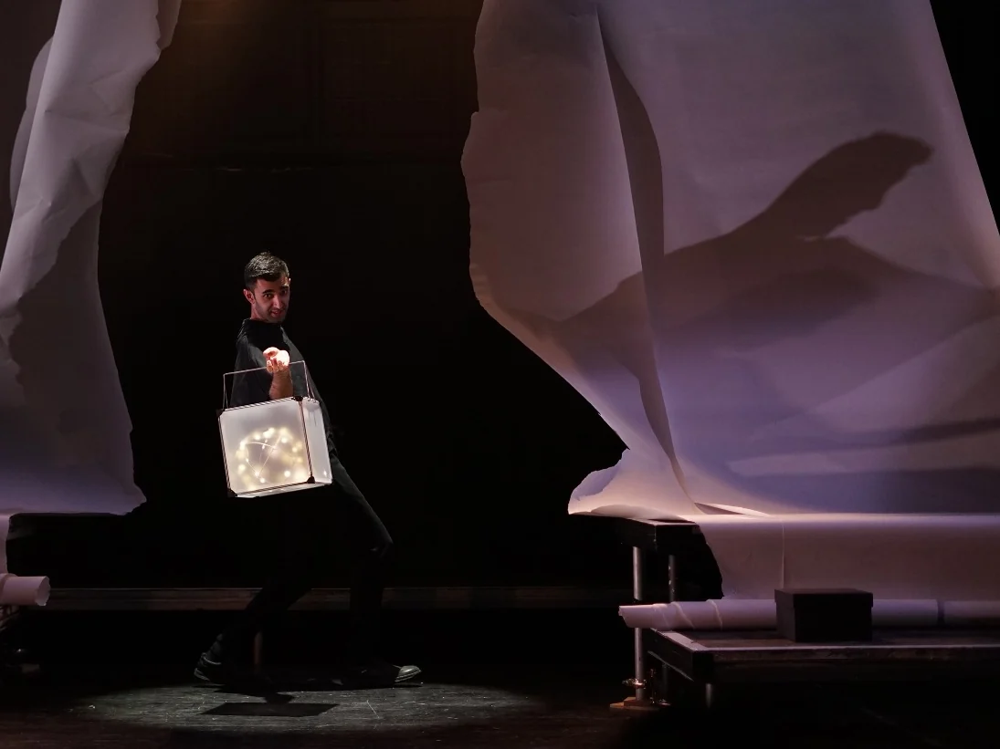
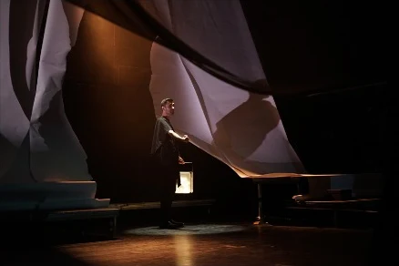
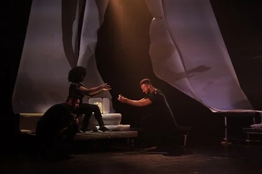
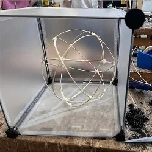
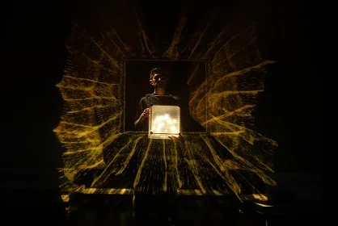

Ovis
Devised Theatre Performance

Ovis is a collaborative response to Shakespeare’s The Tempest. Three figures, the Leader, the Seeker and the Sheep, compete for power. An illuminated box makes that contest visible. As the box changes hands, the audience can follow the shift through the person carrying the light.
We developed a set around a gap at the back of the stage and two staircases in front, giving the performers different levels from which to face each other. I refined the group’s set in a 3D model and made the lightbox with Florence. The production also used motion-responsive projection, so the performers could change the image with a gesture.
- Role
- Set Development, 3D Modelling & Lightbox Fabrication
- Medium
- Scenography, Practical Light, Motion-Responsive Projection, Live Performance
- Location
- Wimbledon College of Arts Theatre
A space built around a gap
Developed at Wimbledon College of Arts Theatre from Shakespeare’s The Tempest, Ovis follows three figures competing for power. I developed the group’s set in 3D, refining a layout in which two staircases meet a gap at the back of the space.




A light that can be held
Florence and I made the lightbox prop. Its glow makes it easy to track who holds it. The production also used motion-responsive projection so the performers could affect the image with their movement.




Credits
- Devised and designed with
- Amy, Aiste, Florence, Giorgia, Laura and Lily
- Set development and 3D modelling
- Yun Deng
- Lightbox fabrication
- Florence and Yun Deng
- Performance photography
- Giorgia